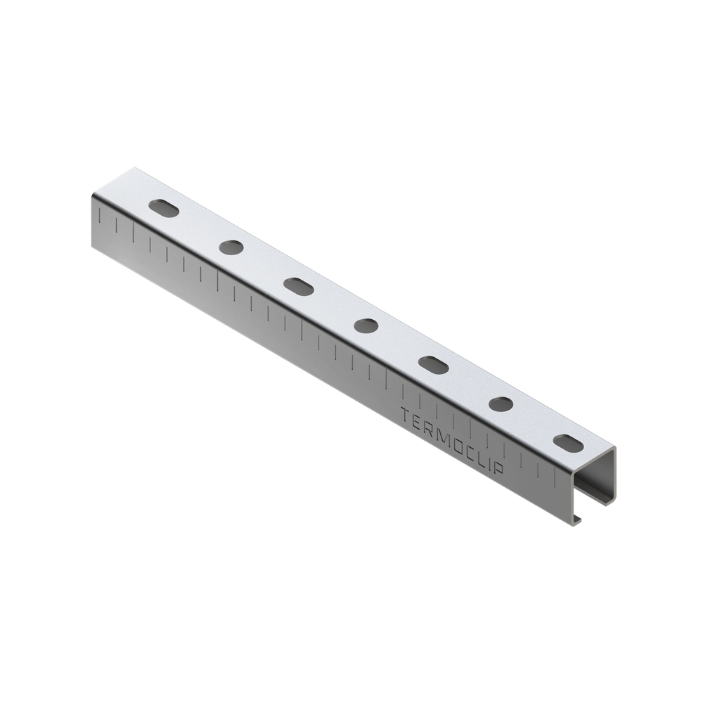
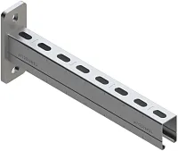
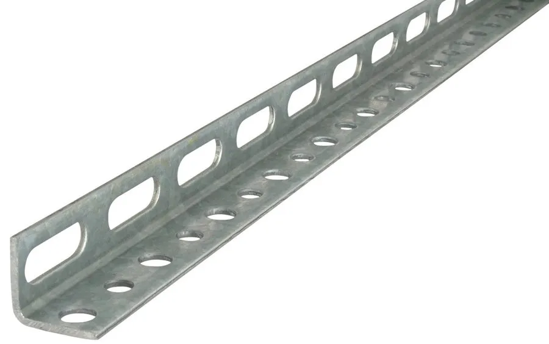
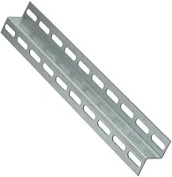
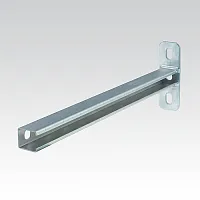

Монтажные профили и консоли
Несущие конструкции для труб, воздуховодов, кабельных трасс и оборудования
Виды профилей и консолей
Листайте и нажмите на карточку, чтобы перейти к описанию

Профиль TSC TERMOCLIP
Несущий С-образный монтажный профиль с перфорацией для инженерных систем.

Консоль ТСА TERMOCLIP
Готовая заводская консоль на опорной площадке для крепления к стене и колонне.

Профиль L-образный монтажный оцинкованный
Перфорированный уголок для каркасов, опор и угловых соединений.

Профиль Z-образный монтажный оцинкованный
Профиль со смещёнными полками для ступенчатого и «разнесённого» крепления.

Профиль монтажный MPC 40/60, 2000 мм, MUPRO, оцинкованный (арт. 129921)
Тяжёлый несущий профиль 40/60 мм с толщиной стенки 3 мм.
Как выбрать
- Универсальная основа для труб, вентиляции и кабелей — профиль TSC;
- готовая опора для крепления к стене — консоль ТСА;
- рамы, угловые соединения и усиление — L-образный профиль;
- ступенчатое крепление, выравнивание плоскости и подконструкции — Z-образный профиль;
- тяжёлые нагрузки и противопожарные крепления — профиль MPC 40/60.
Покрытие «оц»
Оцинкованная сталь защищает профиль от коррозии. Гальваническое цинкование (в том числе Sendzimir) подходит для сухих помещений, а горячее цинкование и более толстый слой цинка — для влажных помещений и работы на открытом воздухе.
Профиль TSC TERMOCLIP
Размеры
Описание
Монтажный (несущий) профиль С-образной формы с монтажными отверстиями. Служит основой для горизонтального и вертикального монтажа инженерных систем: трубопроводов, вентиляции и кондиционирования, электрооборудования и кабельных трасс.
Выпускается в нескольких сечениях и с разными вариантами цинкования — от гальванического до горячего, поэтому подходит для сухих, влажных помещений и для работы на открытом воздухе.
Где применяют
- Подвесные и стоечные опоры для трубопроводов;
- несущие конструкции для воздуховодов и оборудования вентиляции и кондиционирования;
- рамы и основания под оборудование;
- стенные консоли и кабельные трассы;
- стеллажи и инженерные панели.
Уникальные преимущества
- Ребра жёсткости повышают несущую способность при небольшой массе;
- высокоточная геометрия профиля и зубцы для надёжной фиксации гаек быстрого монтажа;
- мерные риски для точного раскроя и форма отверстий для точной регулировки соединений;
- самый широкий выбор сечений, длин и классов цинкования в этой подборке;
- производитель публикует паспорт допустимых нагрузок для каждого сечения.
Консоль ТСА TERMOCLIP
Размеры
Описание
Консоль — это отрезок монтажного профиля, заранее приваренный к опорной седельной площадке с отверстиями под анкеры. Крепится к стене или колонне и образует готовый горизонтальный «рычаг» для нагрузки.
Отличается от профиля тем, что поставляется в готовом виде: не нужно резать, сваривать и подбирать крепёж на объекте.
Где применяют
- Крепление трубопроводов вдоль стен;
- опоры для кабельных лотков и коробов;
- установка воздуховодов и оборудования на стене;
- полки и площадки, нагружаемые вдоль стены.
Уникальные преимущества
- Заводская сварка профиля и опорной площадки обеспечивает высокую нагрузку и стабильное качество;
- экономия времени: не нужно резать и сваривать на объекте;
- отверстия по длине профиля позволяют регулировать положение трубы или лотка;
- несколько стандартных длин под разные вылеты;
- совместима с гайками, болтами и заглушками системы Termoclip.
Профиль L-образный монтажный оцинкованный
Размеры
Описание
Монтажный профиль с сечением в форме буквы L: две перпендикулярные полки с перфорацией. Позволяет собирать каркасы и угловые соединения болтами, без сварки.
Оцинкованное покрытие защищает сталь от коррозии, поэтому профиль подходит для сухих и умеренно влажных помещений.
Где применяют
- Сборка рам, каркасов и подставок под оборудование;
- угловые соединения и усиление конструкций;
- опорные полки под короба, трубы и лотки;
- раскрепление воздуховодов и шкафов;
- временные и монтажные приспособления.
Уникальные преимущества
- Жёсткость в двух плоскостях благодаря углу 90°;
- обе полки можно использовать как опорную и крепёжную плоскость;
- перфорация позволяет собирать и перестраивать конструкции без сварки;
- лёгкий и экономичный вариант там, где не нужна массивная С-образная траверса;
- удобен для создания «полки» и упора.
Профиль Z-образный монтажный оцинкованный
Размеры
Описание
Профиль Z-образного сечения: полки направлены в противоположные стороны. Такая форма позволяет разнести плоскости крепления: одна полка крепится к основанию, другая выступает в сторону.
Оцинкованный металл защищает от коррозии, а перфорация упрощает монтаж и регулировку.
Где применяют
- Каркасы и направляющие для облицовки и панелей;
- выравнивание плоскости при неровном основании;
- крепление элементов на разных уровнях (ступенчатое);
- сборка кассет и подконструкций;
- крепление оборудования со смещением от стены.
Уникальные преимущества
- Смещение полок создаёт зазор или ступень без дополнительных деталей;
- позволяет стыковать элементы внахлёст и на разных уровнях;
- хорошая жёсткость на изгиб при небольшой массе;
- одну полку можно закрепить на основании, другую использовать как несущую или опорную;
- перфорация облегчает регулировку положения.
Консоль MPC MUPRO, оцинкованный
Размеры
Описание
Тяжёлый несущий монтажный профиль MPC серии MUPRO с сечением 40/60 мм и толщиной металла 3 мм. Поставляется длиной 2000 мм с покрытием Sendzimir (цинкование).
Часть системы MPC: к нему подбираются гайки, скобы, заглушки и виброизолирующие элементы. Предназначен для нагруженных конструкций, где лёгкие профили не справляются.
Где применяют
- Несущие конструкции для тяжёлых трубопроводов и воздуховодов;
- предстенные инженерные системы и тяжёлые стеллажи;
- опоры для оборудования большой массы;
- конструкции с повышенными требованиями к противопожарным креплениям.
Уникальные преимущества
- Толщина металла 3 мм и большое сечение — высокая несущая способность: допустимые нагрузки примерно в 2,7 раза выше, чем у профиля 38/40 при малой свободной длине (данные производителя);
- профиль сертифицирован для противопожарных креплений;
- отмечен знаком качества RAL;
- единая система комплектующих: гайки, скобы, заглушки, виброизоляция;
- для расчёта доступны таблицы допустимых нагрузок по длине пролёта.